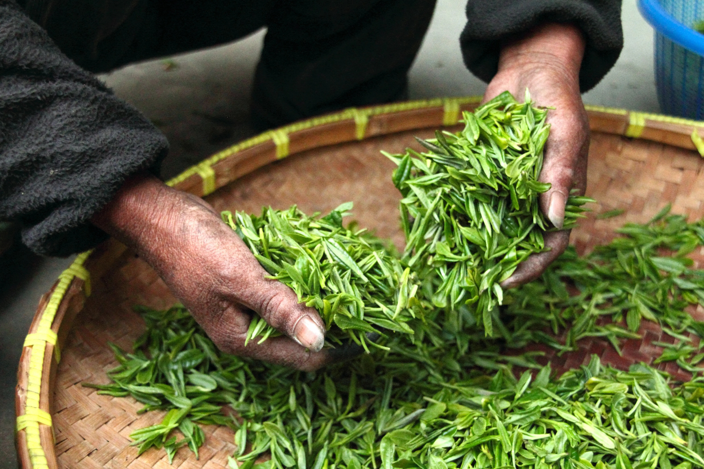
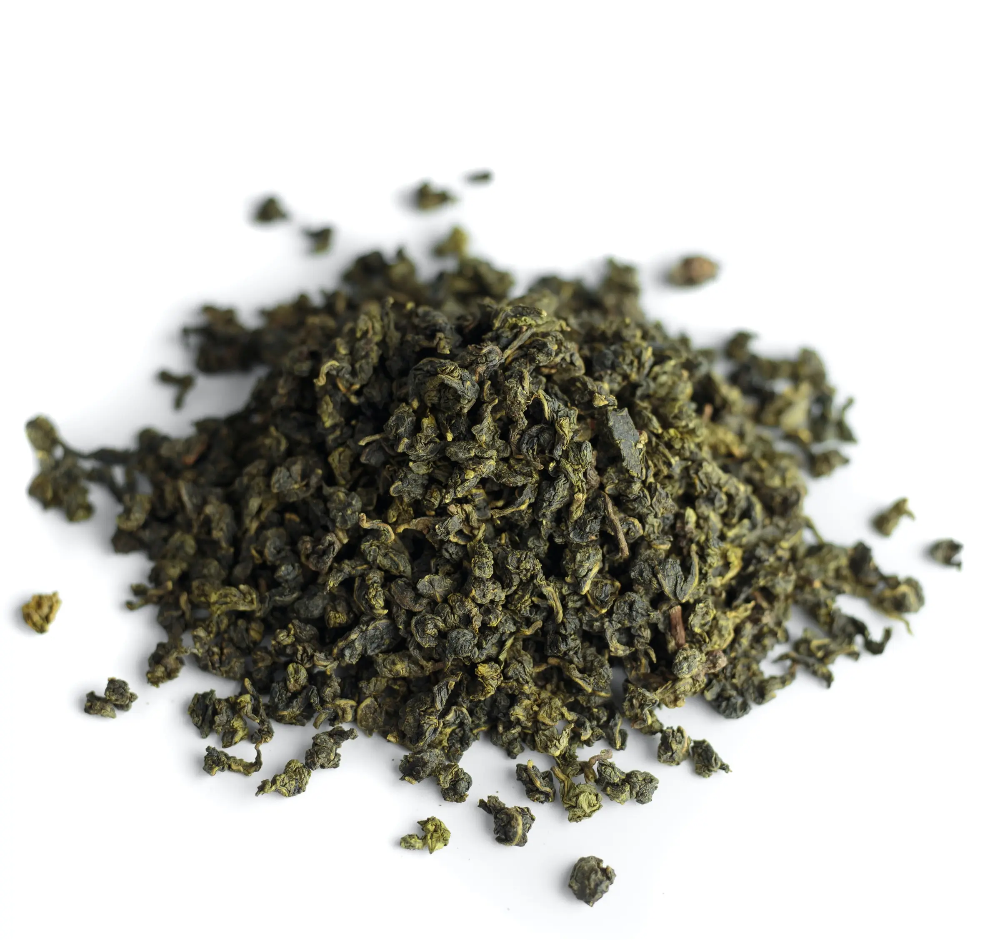
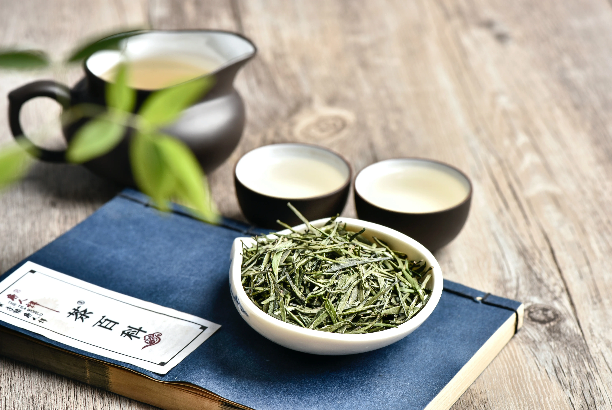

-

-
White Tea
White Tea is the least processed of the true tea; white tea comes from young leaves which are known to have small white hairs on them and the name is believed to be derived from this. White tea has the lowest amount of oxidation of all teas and the most delicate flavour.
-

-
Oolong
Oolong or Blue tea is neither black or green tea. Oolongs oxidation falls somewhere between 8% to 80%, it is not fully oxidised and so can have characteristics of both green and black tea. The shape of oolong is also important as it is typically rolled. Because of its varied oxidation oolong can vary in taste also sometimes being floral and grassy or sweet.
-

-
Green
Green tea is picked from grown leaves and dried or steamed quickly to prevent excess oxidation. Green tea is the tea of choice for those looking for low caffeinated drinks. Green tea is toted to have several health benefits and is the de facto choice of tea of the east. Green tea has been known to taste earthy or herbaceous.

-
Black
Black tea is the quintessential tea known by most people of Europe. PG Tips, Typhoo others are all black tea. As black tea is the most oxidised strongest in scent and flavour and longest lasting enabled it to be shipped around the world and enjoyed by many. Black tea is allowed to fully oxidise and develop a unique flavour profile which can vary based on may factors.